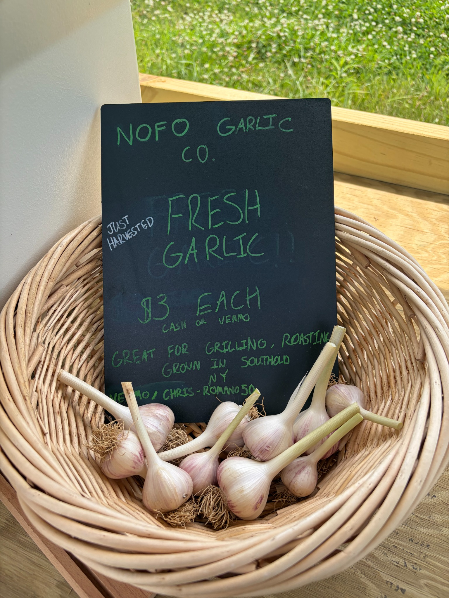
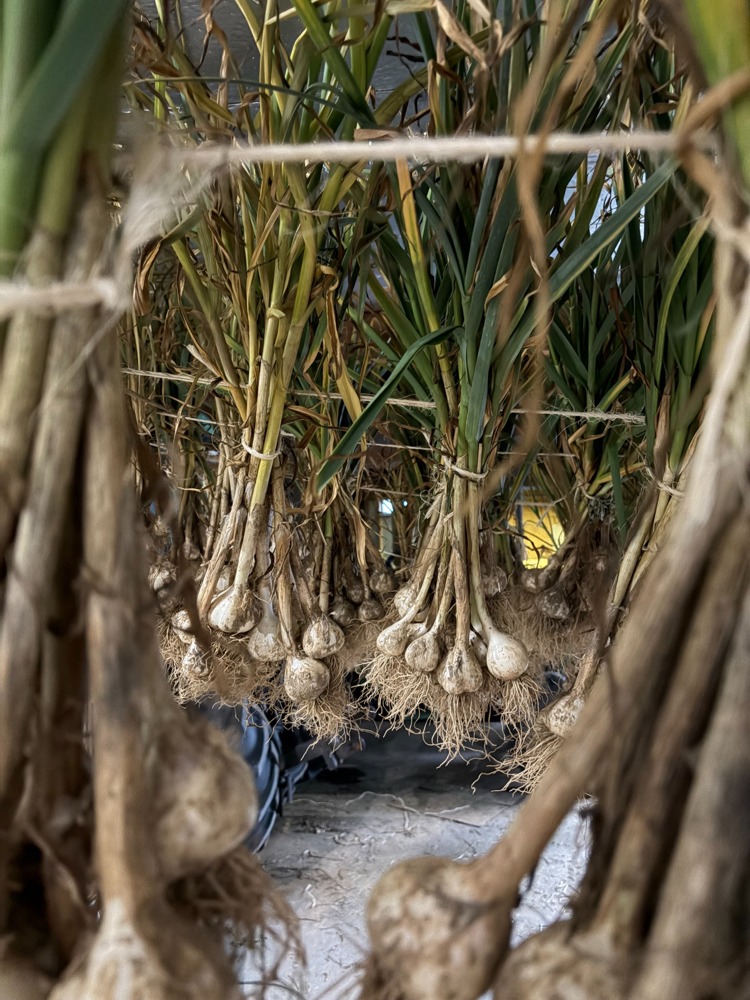
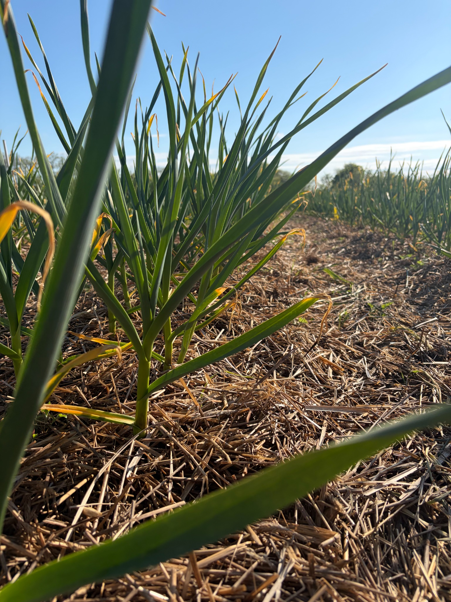
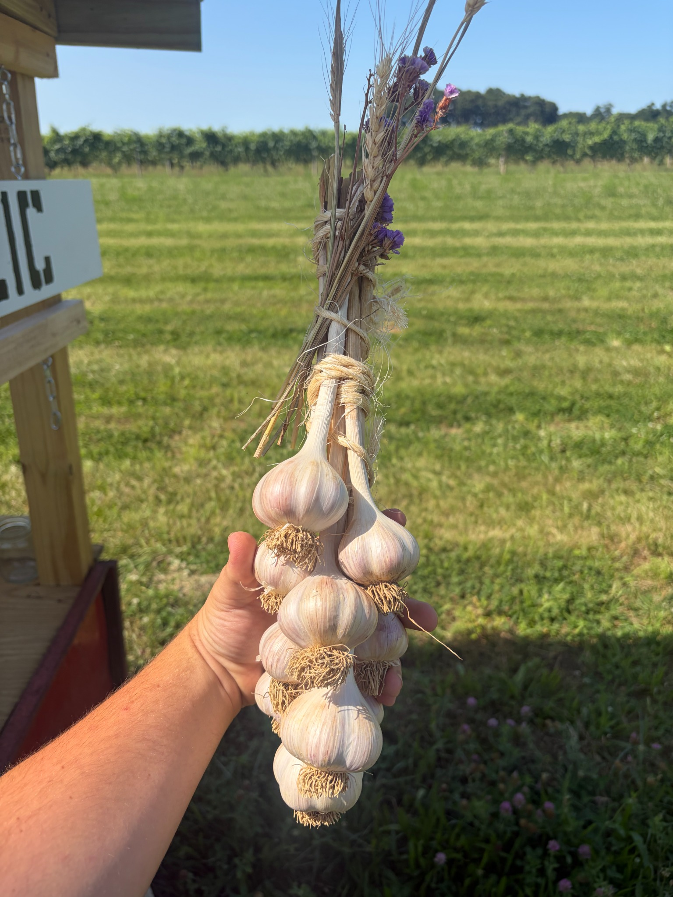
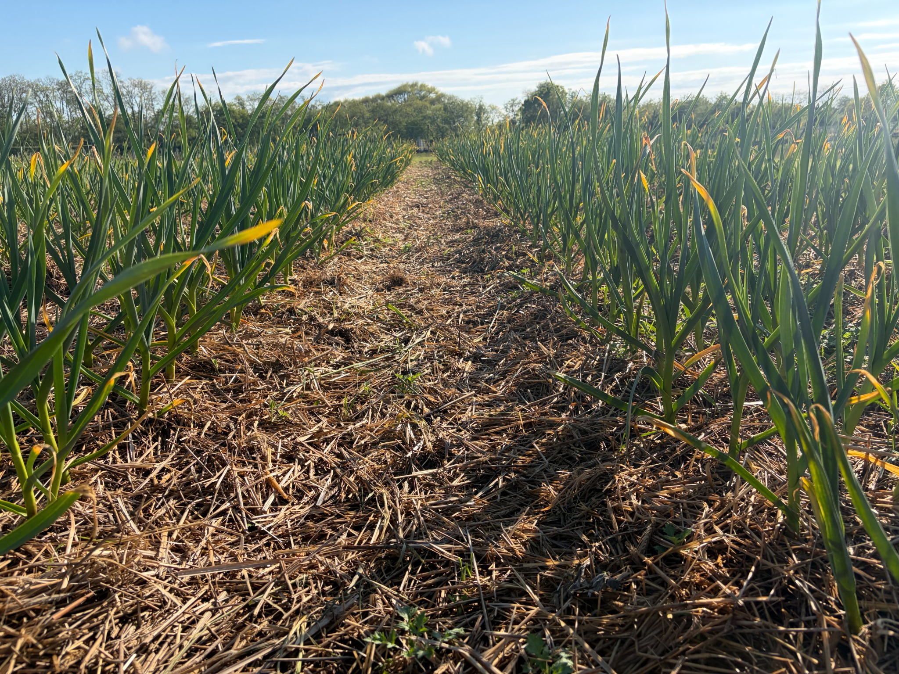
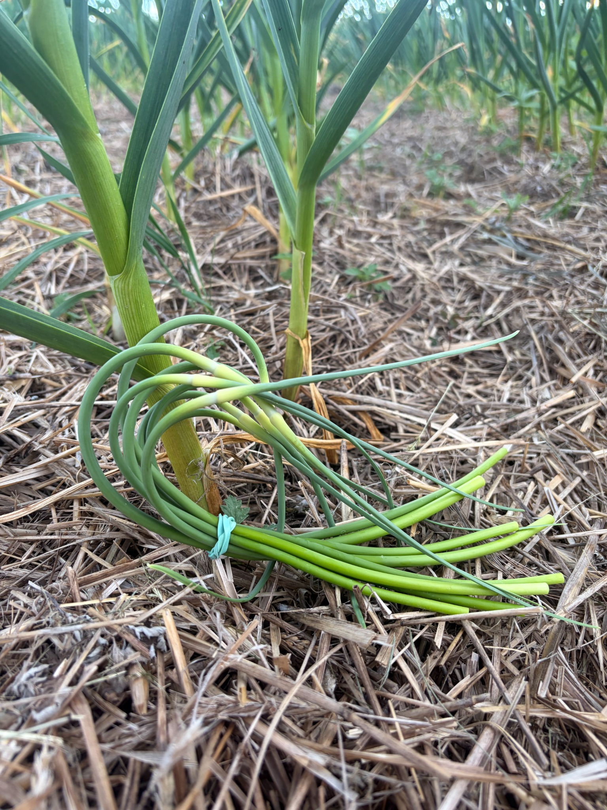
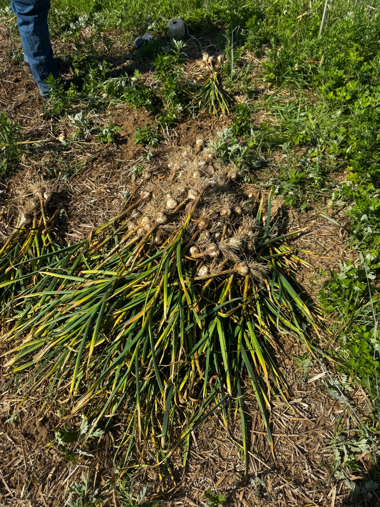
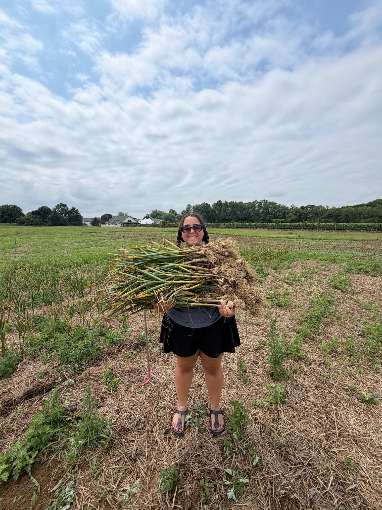
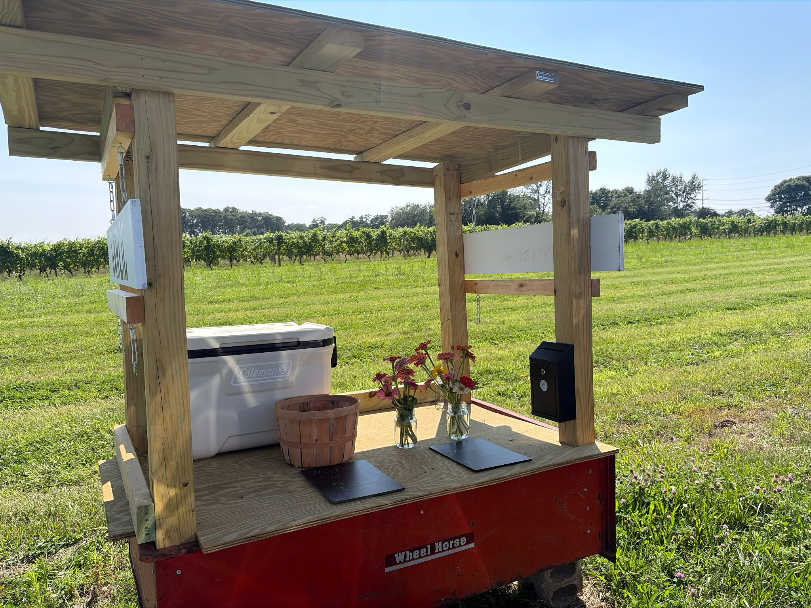

Hardneck · Porcelain
Music
Large, easy-to-peel cloves with the bold flavor and classic appearance that make porcelain garlic a favorite in the kitchen.
Southold, New York · Est. 2025
Premium gourmet garlic grown on Long Island's North Fork.
Rooted on the North Fork
North Fork Garlic Company began in 2025 after founder Chris Romano became fascinated by just how diverse garlic really is. What started with learning the difference between hardneck and softneck garlic quickly turned into discovering the incredible number of varieties within them—each with its own appearance, flavor, and growing characteristics.
With a professional background in Long Island agriculture and vineyard management, Chris wanted to see how these different varieties would perform when grown here on Long Island's North Fork. That curiosity became North Fork Garlic Company.
Today, our garlic is grown with a hands-on approach from planting through harvest, then carefully cured before reaching our customers.

Not All Garlic Is the Same
Discovering the differences between garlic varieties is what inspired North Fork Garlic Company. We grow and trial specialty hardneck varieties selected for flavor, appearance, and performance on Long Island's North Fork.

Hardneck · Porcelain
Large, easy-to-peel cloves with the bold flavor and classic appearance that make porcelain garlic a favorite in the kitchen.

Hardneck · Porcelain
A large-cloved porcelain variety valued for its strong culinary qualities and beautiful white wrappers.

Hardneck · Purple Stripe
A distinctive purple-striped variety known for excellent flavor, especially when roasted.
Garlic 101
Hardneck garlic produces a firm central stalk and, in early summer, a curling flower shoot known as a garlic scape. Hardneck varieties are well suited to colder climates like Long Island and are known for large, easy-to-peel cloves and distinctive variety-to-variety characteristics.
From field to kitchen
Our garlic moves through a full year of planting, winter dormancy, spring growth, scape harvest, summer digging and careful curing before it reaches the stand.
Grown With Intention
At North Fork Garlic Company, our garlic is grown with a focus on soil health and responsible growing practices from planting through harvest. We use cover crops to build and protect our soil, and our garlic is grown without synthetic pesticides, herbicides, or fertilizers.
Cover crops help build and protect our soil between garlic crops.
A hands-on growing approach from planting through harvest.
No synthetic pesticides, herbicides, or fertilizers are used on our garlic.
Each crop is carefully harvested and cured for quality and flavor.
Our garlic is grown using organic practices; it is not represented as USDA Certified Organic.
From Clove to Harvest
Each clove is planted by hand before winter settles over the North Fork.
The rows wake up fast as cool spring weather pushes strong leaf growth.
Curled scapes are harvested young and tender before the bulbs finish sizing.
Bulbs are lifted from the soil by hand at peak maturity.
Garlic hangs and dries with airflow until the wrappers and necks are ready for storage.
Finished garlic heads to the stand, markets and growers preparing for fall planting.
Around the Farm





Seasonal Offerings
Our products follow the North Fork growing season and are available while supplies last.
Freshly harvested garlic with bold flavor and tender wrappers.
$3 / bulbCarefully cured garlic ready for everyday cooking and storage.
$3 / bulbSmaller bulbs with the same locally grown North Fork flavor.
3 bulbs / $6Tender seasonal scapes harvested from our hardneck garlic.
$6 / bundleHand-tied cured garlic ropes finished with seasonal dried botanicals.
$45 eachFresh seasonal bouquets grown locally and offered at the stand.
$10 / bouquetAll of our available garlic varieties can be enjoyed for eating. Healthy bulbs may also be planted as seed garlic. Product selection changes throughout the season and is available while supplies last.
Where to Find Us
Self-Serve Farm Stand
Find fresh locally grown garlic and seasonal offerings at our self-serve farm stand. Availability varies throughout the season.
Get Directions →Every Saturday in August · 9 AM–1 PM
East Meadow, New York
Shop our locally grown garlic in person and see what's available from the current harvest.
Good to Know
Yes. Our garlic can be planted as seed garlic. Choose healthy bulbs, separate the cloves shortly before planting, and plant each clove with the pointed end facing upward.
Hardneck garlic produces a firm central stalk and a curling flower shoot called a scape. It is well suited to colder climates like Long Island and is known for large, easy-to-peel cloves and distinctive flavors.
Store garlic in a cool, dark, dry place with good airflow. Avoid sealed plastic bags or containers that can trap moisture.
Our annual garlic harvest begins in late July. Garlic is available from around the end of July until we sell out. Availability varies from season to season.
Our garlic is grown using organic practices. We use cover crops for soil health and do not use synthetic pesticides, herbicides, or fertilizers on our garlic. We are not USDA Certified Organic.
Stay in Touch
For current availability, harvest updates, farm stand news and seasonal offerings, follow North Fork Garlic Company or send us an email.